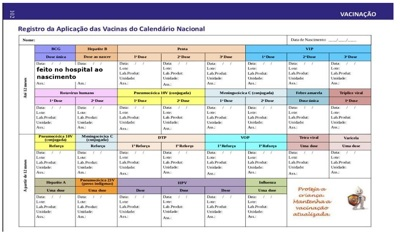
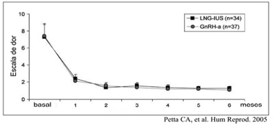
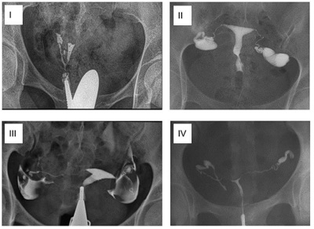
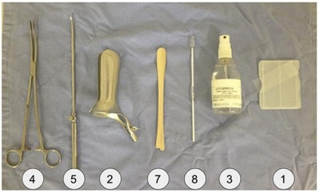
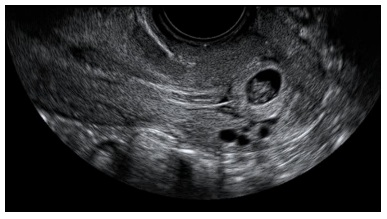

Questão 1 · Descentralização do SUS · 4000164571Analise as seguintes assertivas em relação à descentralização do SUS: I. Existe uma redistribuição do poder, repassando competências e instâncias decisórias para esferas mais próximas à população, e também existe uma rede nição das atribuições, desconcentrando o poder da União e dos Estados para os municípios. II. O processo da municipalização da saúde, entendido como um fenômeno político-administrativo aponta para uma ruptura com o modelo assistencial tradicional e dota os municípios com modelos locais de saúde de acordo com todas as diretrizes do SUS. III. Pressupõe a existência de gestores em vários níveis, mas a célula básica do sistema deve ser o município, cando para os Estados e para União os serviços de alta complexidade tecnológica. Quais estão corretas?
A Apenas I e II.
B Apenas I e III.
C Apenas II e III.
D I, II e III.
Revisar: possível letra faltando em enunciado
Questão 2 · Conceitos básicos · 4000164570Analise as seguintes assertivas em relação aos critérios a serem utilizados na definição de indicadores de saúde: I. Mensurabilidade é a capacidade de basear-se em dados disponíveis ou fáceis de serem obtidos. II. Confiabilidade é a capacidade de reproduzir os mesmos resultados quando aplicado em condições similares. III. Relevância é a capacidade de medir o que se pretende, incluindo a sensibilidade e a especificidade. Quais estão corretas?
A Apenas I e II.
B Apenas I e III.
C Apenas II e III.
D I, II e III.
Questão 3 · Medicina Baseada em Evidências · 4000164569Assinale a alternativa INCORRETA em relação à medicina baseada em evidências.
A É o uso consciente, explícito e judicioso das melhores evidências atuais disponíveis para tomada de decisões acerca do cuidado com os pacientes.
B A comprovação de um benefício clinicamente significativo de testes diagnósticos ou intervenções médicas pode exigir estudo com milhares de pacientes ao longo de vários anos.
C Priorizam-se as pesquisas em seres humanos, em especial aquelas com desfechos clínicos de significância para o paciente e para a sociedade.
D Preconizam as evidências de investigações clínicas que expressam benefícios, riscos e custos, descartando a experiência e o conhecimento clínico.
Questão 4 · Abstinência de Álcool · 4000164568Paciente alcoolista, insone, interrompe, sem orientação médica, o uso da substância e, 20 horas após a interrupção do consumo, é acometido de crise epiléptica. Nessa situação, o médico deve: I. Ficar atento a sinais de desenvolvimento de delirium tremens. II. Prescrever hipnóticos para melhora do sono e desta forma prevenir episódios convulsivos. III. Investigar se a crise epiléptica é decorrente de outra etiologia. Quais estão corretas?
A Apenas I e II.
B Apenas I e III.
C Apenas II e III.
D I, II e III.
Questão 5 · Abstinência de Álcool · 4000164567A síndrome de abstinência por substância está associada aos seguintes critérios: I. O desenvolvimento de uma síndrome especí ca da substância devido à interrupção ou redução de seu uso intenso e prolongado. II. A síndrome especí ca da substância causa sofrimento clinicamente significativo ou prejuízo no funcionamento social, profissional ou em outras áreas importantes da vida do indivíduo. III. Os sintomas não se devem a uma condição médica geral, nem são mais bem explicados por outro transtorno mental. Quais estão corretas?
A Apenas I e II.
B Apenas I e III.
C Apenas II e III.
D I, II e III.
Revisar: possível letra faltando em enunciado
Questão 6 · Resumo das Toxíndromes · Síndrome Adrenérgica · 4000164566Qual é a hipótese diagnóstica mais provável para paciente com história de uso de várias substâncias de abuso e que se apresenta com taquicardia, midríase e hipertensão arterial?
A Acatisia por antipsicótico.
B Intoxicação por álcool.
C Intoxicação por estimulante.
D Abstinência por benzodiazepínicos.
Questão 7 · Abstinência de Álcool · Delirium Tremens · 4000164565Qual das medicações descritas abaixo NÃO deveria ser usada em pacientes com risco de desenvolver agitação psicomotora?
A Tiamina.
B Diazepam.
C Clozapina.
D Carbamazepina.
Questão 8 · A carga de doenças no Brasil tripla carga de doenças · 4000164564Assinale a alternativa INCORRETA em relação às doenças infecciosas como um problema de saúde no Brasil.
A Algumas doenças específicas como diarreias, doenças imunopreveníveis e pneumonia em crianças não sofreram reduções significativas desde a década de 1970.
B A grande parcela das mortes causadas por doenças infecciosas atualmente é devida a infecções respiratórias, que são mais comuns em adultos do que em crianças.
C O sucesso no controle de HIV/Aids, hepatite A e B, hanseníase, tuberculose, malária e esquistossomose é apenas parcial.
D Houve fracasso, até agora, no controle da dengue e da leishmaniose visceral.
Questão 9 · Processos de Descentralização e Regionalização do SUS · Sistema Único de Saúde SUS · 4000164563Analise as seguintes assertivas em relação ao SUS: I. Serviços Especiais de Acesso Aberto são serviços de saúde específicos para o atendimento da pessoa que, em razão de agravo ou de situação laboral, necessita de atendimento especial. II. A universalidade de acesso é entendida como conjunto articulado e contínuo das ações e serviços preventivos e curativos, individuais e coletivos, exigidos para cada caso em todos os níveis de complexidade do sistema. III. Rede de Atenção à Saúde é o conjunto de ações e serviços de saúde articulados em níveis de complexidade crescente, com a finalidade de garantir a integralidade da assistência à saúde. Quais estão corretas?
A Apenas I e II.
B Apenas I e III.
C Apenas II e III.
D I, II e III.
Questão 10 · Política Nacional de Atenção Básica PNAB · 4000164562Qual das alternativas abaixo é tarefa ou papel dos Agentes Comunitários de Saúde no cuidado domiciliar?
A Avaliar de modo integral, individual, familiar e no contexto social a situação da pessoa enferma.
B Identificar e mobilizar, na comunidade, redes de apoio ao plano de assistência domiciliar pactuado com a família.
C Avaliar as condições e a infraestrutura física do domicílio para a modalidade de cuidado domiciliar requerida.
D Acompanhar a evolução dos casos, seguindo checklist da pessoa, e comunicar à equipe as alterações observadas.
Questão 11 · Herpangina Doença MãoPéBoca · Pediatria · 4000164561Paciente de 6 anos de idade, com quadro de febre baixa, mal-estar e dor de garganta há 2 dias, vem à Unidade Básica de Saúde apresentando lesões ulceradas, doloridas, na cavidade oral, sobretudo em língua e palato. Também refere o aparecimento de lesões nas laterais dos dedos e na superfície dorsal de mãos e pés. Considerando que a principal suspeita seja a síndrome mão-pé-boca, qual é o provável germe causador?
A Epstein-Barr Virus.
B Morbillivírus.
C Coxsackie vírus.
D Paramixovirus.
Questão 12 · Saúde do Trabalhador · Vigilância em Saúde do Trabalhador · 4000164560Analise as seguintes assertivas em relação às doenças relacionadas ao trabalho: I. As pneumoconioses são doenças de notificação compulsória no SUS, independentemente do seu vínculo de trabalho. II. A perda auditiva induzida por ruído tem maior risco quando a média da exposição está acima de 75 dB por horas diárias e as exposições intermitentes são piores do que as contínuas. III. As pneumoconioses podem ser classificadas em brogênicas e não brogênicas, de acordo com o potencial da poeira em produzir fibrose reacional. Quais estão corretas?
A Apenas I e II.
B Apenas I e III.
C Apenas II e III.
D I, II e III.
Questão 13 · Relação entre médicos · 4000164559Após tentativas frustradas de contatar o médico assistente de um paciente com vômitos incoercíveis, a enfermeira pede ajuda a um médico, que, após avaliar o paciente, prescreveu medicação. A seguir, evolui no prontuário e comunicou o médico assistente. De acordo com o código de ética médica, a atitude do médico foi:
A Inadequada em todos os aspectos, pois é vedado ao médico intervir na prescrição de outro médico.
B Parcialmente adequada; o médico não deveria ter avaliado o paciente, por não ser o seu médico assistente.
C Parcialmente adequada; o médico violou a privacidade do paciente ao evoluir no prontuário de um paciente que não era seu.
D Adequada em todos os aspectos.
Questão 14 · Quedas em idosos · Protocolos de prevenção de quedas · Neurologia · 4000164558Analise as seguintes assertivas em relação às quedas no idoso: I. Mudanças posturais relacionadas à idade, dé cit visual, uso de medicações e doenças que afetam a força muscular e a coordenação motora são fatores que contribuem para índices tão altos. II. Os pacientes raramente mencionam o evento ao seu médico se não houve lesão por ocasião da queda, e o pro ssional de saúde não tem por hábito perguntar sobre a história pregressa de quedas. III. Mesmo quando resultam em algum agravo que necessite tratamento, raramente as causas das quedas são investigadas de forma a identificar possíveis causas evitáveis. Quais estão corretas?
A Apenas I e II.
B Apenas I e III.
C Apenas II e III.
D I, II e III.
Questão 15 · Demências · Síndrome Demencial · Neurologia · 4000164557Analise as seguintes assertivas em relação ao diagnóstico das demências: I. A avaliação da depressão é recomendável, pois frequentemente mascara um quadro demencial. II. A etiologia não é importante, já que os processos demenciais são inexoráveis e progressivos. III. O diagnóstico é essencialmente clínico, mas pode ser dificultado pela presença de múltiplas comorbidades. Quais estão corretas?
A Apenas I e II.
B Apenas I e III.
C Apenas II e III.
D I, II e III.
Questão 16 · Estudos SeccionaisTransversais · 4000164556Assinale a alternativa INCORRETA em relação aos estudos transversais.
A São realizados para conhecer estimativas de prevalência de doenças ou problemas de saúde e também a exposição a fatores associados à doença.
B As informações sobre exposição e desfecho são aferidas simultaneamente em uma única ocasião.
C Esse tipo de estudo é indicado para investigar doenças raras ou de baixa prevalência, pois é comum encontrar casos na população.
D As informações de exposição e desfecho são coletadas ao mesmo tempo, não sendo possível estabelecer com segurança a precedência temporal entre elas.
Questão 17 · Rastreamento · 4000164555Assinale a alternativa correta em relação ao rastreamento de doenças.
A O viés de sobrediagnóstico constitui-se em um dos principais problemas de saúde pública atribuídos aos programas de rastreamento que não é eliminado por meio dos ensaios clínicos randomizados.
B É uma intervenção que não oferece risco potencial à saúde das pessoas sem o respectivo benefício.
C Avaliação de procedimentos de rastreamento é técnica e eticamente fácil, pois envolve vieses e fenômenos simples.
D É a aplicação de testes em pessoas sintomáticas com objetivo de selecionar indivíduos para intervenções cujo benefício potencial seja maior do que o dano potencial.
Questão 18 · Erros Sistemáticos ViésVieses · 4000164554Analise as seguintes assertivas em relação aos erros e validade de dados de pesquisa: I. Viés de seleção: quando os grupos de comparação não são semelhantes em todas as demais características. II. Viés de observação: quando há erro de diagnóstico de um desfecho de saúde, dependendo da forma como as variáveis são medidas. III. Viés de memória: quando estudos em que o método de aferição difere entre um grupo e outro. Quais estão corretas?
A Apenas I e II.
B Apenas I e III.
C Apenas II e III.
D I, II e III.
Questão 19 · Estudos de Coorte · 4000164553Como se chamam os estudos caracterizados pelo monitoramento dos indivíduos ao longo do tempo para avaliar o surgimento de novos casos de uma doença (incidência) ou de outro desfecho que seja de interesse?
A Transversais.
B De coorte.
C De caso-controle.
D Ecológicos.
Questão 20 · Expansão da APS no Brasil · 4000164552Assinale a alternativa correta em relação à Atenção Primária à Saúde.
A Deve ser a única porta de entrada tanto para problemas agudos quanto crônicos.
B A atenção primária se restringe a países ou locais com maior vulnerabilidade social.
C Proporciona atenção à saúde da população sem distinção de gênero, doença ou sistema orgânico.
D O termo prevenção serve como sinônimo de “cuidado a pessoas que não têm sintomas”.
Questão 21 · Transtorno do Déf icit de Atenção e Hiperatividade TDAH · 4000164551Em relação ao Transtorno do Déficit de Atenção com Hiperatividade (TDAH), é correto afirmar que:
A É um transtorno que usualmente aparece na infância ou adolescência, relacionado a alterações neurobiológicas e costuma apresentar melhora do quadro clínico com uso de psicoestimulantes.
B É relacionado essencialmente com fatores culturais (as práticas de determinada sociedade) e as primeiras vivências infantis (o modo como os pais, ou seus substitutos, educam e se relacionam com os filhos, com os decorrentes conflitos psicológicos).
C São consideradas as principais causas: luz artificial, consumo de açúcar, deficiência hormonal e deficiências vitamínicas na dieta da criança. Não estão associados a outras comorbidades psiquiátricas na vida adulta.
D Abordagem focada completamente na relação do terapeuta com o paciente.
Questão 22 · Fobia Social ou Transtorno de Ansiedade Social · 4000164550Qual é o achado mais frequente na criança com diagnóstico de Transtorno de Ansiedade Social?
A Violência com os animais.
B Imposição aos colegas para realização de suas tarefas escolares.
C Impulsividade e violência com os colegas.
D Inibição e dificuldade de interação com os pares.
Questão 23 · Tratamento Prof ilático · Neurologia · 4000164549São fármacos indicados para tratamento profilático da enxaqueca: I. Topiramato. II. Amitriptilina. III. Divalproato de sódio. Quais estão corretos?
A Apenas I e II.
B Apenas I e III.
C Apenas II e III.
D I, II e III.
Questão 24 · Tratamento · Síndrome de GuillainBarré · Neurologia · 4000164548Na Síndrome de Guillain-Barré (polirradiculoneurite aguda), é INCORRETO afirmar que:
A A paralisia muscular seja flácida, simétrica e ascendente.
B Ocorra dissociação proteinocitológica no líquido cefalorraquidiano.
C Corticosteroides é a medicação de escolha.
D Há hiporreflexia ou arreflexia tendinosa.
Questão 25 · Conceitos em Epilepsia · Neurologia · Epilepsias · 4000164547Quanto à crise convulsiva febril simples, é correto afirmar que:
A É definida por crise epiléptica que acomete criança entre 3 meses e 5 anos de idade, na vigência de febre, com acometimento das leptomeninges cranianas.
B Seu diagnóstico é confirmado pelo eletroencefalograma e o hemograma.
C Seu diagnóstico é confirmado pelo eletroencefalograma e o hemograma.
D Seu diagnóstico é predominantemente clínico.
Questão 26 · Exame f ísico do Recémnascido · 4000164546Recém-nascido a termo apresenta desde o nascimento lesões vesicopustulares de 1 a 3 milímetros de diâmetro em cabeça, região cervical e tronco. As lesões rompem-se espontaneamente e deixam uma descamação em colarete que evoluem para pequenas manchas hipercrômicas. O diagnóstico mais provável é:
A Eritema tóxico.
B Melanose pustulosa.
C Miliária rubra.
D Acne neonatal.
Questão 27 · Pediatria · Icterícia nenonatal e distúrbios hematológicos no RN · 4000164545Recém-nascido a termo com 40 semanas de idade gestacional, apgar 9/10, apresenta icterícia até a raiz das coxas com 18 horas de vida. Grupo sanguíneo materno O, Rh negativo, com teste de Coombs indireto negativo com 20 e 32 semanas de gestação. Recém-nascido com tipagem sanguínea A, Rh positivo e teste do Coombs direto 2+ no sangue do cordão. Coletados exames laboratoriais: Bilirrubina total 12 mg/dl, Reticulócitos: 7% e presença de alguns esferócitos em sangue periférico. Qual a provável etiologia dessa icterícia?
A Incompatibilidade ABO.
B Incompatibilidade Rh.
C Esferocitose hereditária.
D Deficiência de G-6-PD.
Questão 28 · Reanimação neonatal · 4000164544Analise as assertivas abaixo sobre as diretrizes internacionais para ressuscitação cardiovascular do recém-nascido em sala de parto: I. Quando a ventilação com pressão positiva é indicada no RN ≥34 semanas, iniciar com oxigênio a 21%. II. Ao realizar compressões torácicas, é preferível a técnica dos dois dedos em relação à técnica dos dois polegares, pois a primeira se associa a menos fadiga e gera maior pressão sistólica e perfusão coronariana. III. Enquanto o acesso venoso está sendo obtido, caso esteja indicado uso de medicação, é razoável administrar epinefrina endotraqueal em uma dose maior (0,05 a 0,1 mg/kg). Quais estão corretas?
A Apenas II.
B Apenas III.
C Apenas I e II.
D Apenas I e III.
Questão 29 · Calendários vacinais · 4000164543Mãe de um bebê o levou para à primeira consulta de revisão de puericultura com cinco meses e dez dias. Apresentou a carteira de vacinação abaixo. Qual das seguintes vacinas NÃO seria indicada para regularização imediata das vacinas desse paciente?

A Penta.
B Rotavírus humano.
C Pneumocócica 10 (conjugada).
D Meningocócica C (conjugada).
Questão 30 · Emergências Pediátricas Parada Cardiorrespiratória PCR e Arritmias na Emergência · Pediatria · 4000164542Segundo as diretrizes da Academia Americana de Cardiologia publicadas em outubro de 2020, a relação de compressões e ventilações na reanimação de crianças a partir de 1 ano, até obtenção de via aérea avançada, quando realizada por dois ou mais reanimadores, é:
A 15:2.
B 15:1.
C 30:2.
D Sem interrupções, é contínua.
Questão 31 · Pediatria · Exantema Súbito · 4000164541Lactente de 10 meses é trazido à consulta com história de febre há 3 dias, em uso de amoxicilina desde a noite anterior. A mãe refere o surgimento de manchas no corpo que atribuiu à provável alergia ao antimicrobiano, já que a febre desapareceu na primeira administração do medicamento. Ao exame físico, se encontra em bom estado geral e ativo, sendo os únicos achados alterados orofaringe hiperemiada, e presença de lesões maculares sem relevo em tronco. Qual hipótese diagnóstica mais provável e conduta pertinente para o caso?
A Reação alérgica ao antimicrobiano, trocar para Azitromicina e revisar em 48 horas.
B Reação alérgica ao antimicrobiano, iniciar anti-histamínico, manter Amoxicilina e revisar em 24 horas.
C Exantema súbito (roséola), manter antimicrobiano, solicitar hemograma e revisar com resultado.
D Exantema viral (roséola), suspender antimicrobiano, manter observação domiciliar, revisar se retornar febre ou alteração do quadro clínico.
Questão 32 · Pediatria · Cardite · 4000164540Na febre reumática secundária ao estreptococo beta-hemolítico, as manifestações valvulares cardiológicas mais frequentes podem ser auscultadas nos sítios de ausculta identificados, na imagem abaixo, pelos números:

A 1 e 2.
B 1 e 4.
C 2 e 3.
D 3 e 4.
Questão 33 · Quadro clínico · Pediatria · 4000164539Quais dos sinais e achados de exame físico a seguir caracterizam uma desidratação moderada?
A Frequência cardíaca normal para faixa etária, choro sem lágrimas, olhos normais, pulsos periféricos finos e diurese preservada.
B Frequência cardíaca aumentada para faixa etária, choro sem lágrimas, enoftalmia, pulsos periféricos finos, diurese diminuída com urina concentrada.
C Frequência cardíaca normal para faixa etária, olhos secos, enoftalmia, pulsos periféricos normais e diurese normal.
D Frequência cardíaca aumentada, lágrimas presentes, olhos normais, diurese diminuída normoconcentrada.
Questão 34 · Pediatria · Puericultura Geral · 4000164538Em relação à semiologia pediátrica, analise as assertivas a seguir e assinale V, se verdadeiras, ou F, se falsas. ( ) As modi cações que acontecem nos ritmos cardíaco e respiratório são inversamente proporcionais ao aumento da idade. ( ) Fechamento precoce das fontanelas tem relação com microcefalia. ( ) Criptorquidia significa testi A ordem correta de preenchimento dos parênteses, de cima para baixo, é:
A V – V – V.
B V – F – V.
C F – F – F.
D F – V – F.
Questão 35 · Vacina BCG · 4000164537Em relação à vacina BCG, analise as assertivas a seguir: I. A resposta protetora leva aproximadamente 12 semanas. II. Recém-nascidos pré-termo devem pesar 2 Kg para recebê-la. III. Deve ser aplicada ao nascer e aos 6 meses. Quais estão corretas?
A Apenas II.
B Apenas I e II.
C Apenas I e III.
D I, II e III.
Questão 36 · Rinossinusites · 4000164536Assinale a alternativa correta considerando o diagnóstico de rinossinusite na criança.
A É caracterizada pela presença de dois ou mais sintomas, sendo a febre e a tosse necessários para o diagnóstico.
B A presença de corpo estranho nasal deve ser um diagnóstico diferencial.
C Aproximadamente 90% das crianças com rinossinusite aguda viral evoluem para uma rinossinusite aguda bacteriana.
D Inflamação da mucosa nasossinusal com duração superior a 4 semanas caracteriza a rinossinusite crônica.
Questão 37 · Pediatria · Exame de urina · 4000164535Analise as assertivas abaixo em relação às alterações encontradas no exame comum de urina em crianças: I. A densidade urinária elevada pode ser correlacionada com desidratação. II. A síndrome hemolítico-urêmica é diagnosticada pela presença de hemácias fragmentadas na urina. III. A piúria pode estar ausente em pacientes com bacteriúria e infecção do trato urinário. Quais estão corretas?
A Apenas III.
B Apenas I e II.
C Apenas I e III.
D I, II e III.
Questão 38 · Retorno da mulher ao trabalho · Pediatria · 4000164534Mãe amamentando seu filho de quatro meses exclusivamente no peito retornou ao trabalho. Foi orientada a retirar e guardar o seu leite para ser oferecido a seu filho enquanto estiver fora de casa. Analise as seguintes orientações dadas à mãe: I. O leite retirado da mama pode ser conservado em geladeira por até 12 horas e no freezer ou no congelador por até 15 dias. II. O leite materno retirado deve ser oferecido, de preferência, em um copo, uma xícara ou uma colher. III. O leite materno retirado não deve ser fervido e nem levado ao micro-ondas, apenas aquecido em banho-maria. Quais estão corretas?
A Apenas I e II.
B Apenas I e III.
C Apenas II e III.
D I, II e III.
Questão 39 · Pediatria · Puericultura Geral · 4000164533Analise as seguintes assertivas e assinale V, se verdadeiras, ou F, se falsas, em relação às orientações de puericultura abaixo. ( ) A posição supina é recomendada para o recém-nascido dormir. ( ) O andador é recomendado somente para lactentes com atraso no desenvolvimento motor. ( ) A exposição frente às telas digitais deve ser desencorajada para crianças menores de dois anos de idade. ( ) Recém-nascido deve ser conduzido em automóvel em assento tipo bebê-conforto no banco de trás e instalado de frente para o painel do veículo. ( ) As roupas do recém-nascido devem ser lavadas com água e sabão neutro, evitando-se o uso de sabão em pó e amaciante. A ordem correta de preenchimento dos parênteses, de cima para baixo, é:
A V – F – V – F – V.
B F – V – F – F – F.
C V – F – V – V – V.
D F – V – F – V – F.
Questão 40 · Avaliação do Crescimento · Pediatria · 4000164532Em relação ao processo de crescimento infantil, é correto afirmar que:
A O peso é um indicador sensível a longo prazo.
B É constante, mas apresenta velocidade variável.
C O canal de crescimento de meninas, nas curvas de peso e estatura, apresenta-se sempre mais elevado quando comparado ao canal de crescimento de meninos.
D Ao final do primeiro ano de vida, o lactente tem aproximadamente, em relação ao nascimento, o seu peso triplicado e o seu comprimento dobrado.
Questão 41 · Transtornos do Humor · Síndrome prémenstrual · 4000164531Mulher, 30 anos, apresenta episódios intercorrentes de tristeza intensa, desinteresse, ideias de desvalia, tensão, acompanhada de cefaleia e dores musculares. Fica irritada facilmente, mas os sintomas desaparecem rapidamente, voltando ao seu comportamento usual, tranquilidade e interesse. O transtorno mais provável é:
A Disfórico pré-menstrual.
B Ansiedade generalizada.
C Ciclotímico.
D Dismórfico corporal.
Questão 42 · Psicof armacologia · Psicof ármacos na Gestação e Amamentação · 4000164530Paciente procura atendimento em uma Unidade de Saúde. Ela teve alta hospitalar psiquiátrica há mais de 1 ano, devido a um episódio agudo de Transtorno do Humor, episódio depressivo grave, atualmente retornou ao funcionamento pré-mórbido, está estável, tem 28 anos de idade e não possui nenhuma comorbidade. A paciente vem fazendo uso de diversos psicofármacos, porém quer aconselhamento do médico, pois pretende parar o uso de contraceptivo oral, já que ela e o marido desejam engravidar. Ela está preocupada com o uso dos medicamentos, entretanto não gostaria de parar com todos, pois, devido a ter apresentado vários episódios de depressão, receia o retorno dos sintomas depressivos durante e após a gestação. Se você fosse o médico, das medicações descritas abaixo, qual você iria retirar mais rapidamente, pensando na segurança do futuro concepto em termos de prevenção de possíveis efeitos teratogênicos e, posteriormente, durante a amamentação?
A Haloperidol.
B Sertralina.
C Carbamazepina.
D Bupropiona.
Questão 43 · Tratamento clínico · 4000164529Paciente de 30 anos com dismenorreia progressiva foi avaliada por seu médico. Com base no gráfico do estudo randomizado acima, e das propriedades das duas medicações estudadas, análogos do hormônio liberador de gonadotro na (GnRH-a) e sistema intrauterino liberador de levonorgestrel (LNG-IUS), é correto afirmar que:

A Mais pacientes preferem usar o GnRH-a (n=37), apesar de não haver diferença significativa, quando comparado com uso do LNG-IUS (n=34).
B Não existe diferença significativa entre usar LNG-IUS e GnRH - a no que se refere à dor no final de 6 meses, portanto a paciente poderá receber qualquer um dos medicamentos para reduzir a sua dor, sendo que os efeitos colaterais das duas medicações são idênticos.
C Seria preferível oferecer GnRH-a por não ter os efeitos colaterais do hipoestrogenismo causados pelo LNG-IUS.
D Seria preferível oferecer LNG-IUS por não ter os efeitos colaterais do hipoestrogenismo causados pelo GnRH-a.
Questão 44 · Tratamento · 4000164528Paciente de 42 anos, na menacme, vem por queixa de sangramento vaginal irregular. Ela já teve um lho por parto vaginal; nega diabetes, uso de medicamentos ou outras doenças. Seu índice de massa corporal é de 25. O médico pediu uma ecogra a transvaginal para avaliar a espessura endometrial; o resultado foi de 7 mm; depois ele realizou uma biópsia de endométrio no consultório, sendo que o resultado da patologia foi hiperplasia endometrial sem atipia. Com isso, ele resolveu colocar um sistema intrauterino com levonorgestrel (SIU-LNG). Em relação à conduta médica, está correto afirmar que:
A Não havia necessidade de solicitar ecografia transvaginal para avaliar a espessura endometrial em mulheres pré- menopáusicas, a biópsia de endométrio afastou a chance de câncer endometrial e o uso do SIU-LNG está correto.
B A ecografia transvaginal com mais de 4 mm de espessura endometrial na mulher pré-menopáusica é fator de risco para câncer de endométrio, a biópsia de endométrio se justifica por isso, e o tratamento de primeira linha é acetato de medroxiprogesterona por via oral.
C A ecografia transvaginal com mais de 7 mm de espessura endometrial na mulher pré-menopáusica é fator de risco para câncer de endométrio, a biópsia de endométrio nesse caso não afasta a possibilidade de câncer endometrial, e o tratamento de primeira linha é o acetato de medroxiprogesterona 150 mg, intramuscular, a cada 3 meses.
D A ecografia transvaginal com mais de 4 mm de espessura endometrial na mulher pré-menopáusica é fator de risco para câncer de endométrio, a biópsia de endométrio nesse caso não afasta a possibilidade de câncer endometrial, sendo necessária a histeroscopia diagnóstica.
Questão 45 · Planejamento f amiliar · 4000164527A figura abaixo representa um corte transversal de uma ultrassonografia uterina. Diante do caso representado na ultrassonografia acima, é correto afirmar que:

A O uso de implantes subdérmicos está indicado, uma vez que a imagem ultrassonográfica não é uma contraindicação para o seu uso.
B O dispositivo intrauterino de cobre pode ser utilizado, após a retirada dos pólipos endometriais.
C O dispositivo intrauterino com levonorgestrel está indicado para reduzir o espessamento endometrial.
D A paciente poderá utilizar anticoncepcionais orais combinados, mas deve ser avisada que poderá ter sangramentos de escape pela presença dos miomas intramurais.
Questão 46 · Modif icações f isiológicas · Ginecologia · 4000164526São alterações relacionadas ao hipoestrogenismo no climatério: I. Alterações do humor e declínio das funções cognitivas. II. Fogachos e suores noturnos. III. Ganho de peso. Quais estão corretas?
A Apenas I.
B Apenas III.
C Apenas I e II.
D I, II e III.
Questão 47 · Síndrome de Asherman · Ginecologia · 4000164525Paciente de 30 anos vem com queixa de amenorreia secundária. Na sua história obstétrica, ela apresentava gesta 3, para 2, aborto 1. O pré-natal das duas gestações ocorreram sem intercorrências, e os partos foram a termo, um em 2005 e o outro em 2007. O abortamento ocorreu há 13 meses, sendo que o resultado da patologia identi cou restos placentários com fragmentos de miométrio, em meio a vários coágulos. O médico solicitou uma histerossalpingogra a. Com base na história, a imagem histerossalpingográfica mais provável de ser encontrada é:

A I.
B II.
C III.
D IV.
Questão 48 · Ginecologia · Propedêutica do casal inf értil · 4000164524Analise as assertivas abaixo em relação à propedêutica do casal infértil: I. A biópsia de endométrio não é um método preciso da ovulação em mulheres inférteis. II. A histerossalpingografia é considerada o padrão-ouro para o diagnóstico da permeabilidade tubária. III. A histerossonogra a é o método definitivo e considerado o padrão-ouro para o diagnóstico e tratamento das patologias intrauterinas. Quais estão corretas?
A Apenas I.
B Apenas III.
C Apenas I e II.
D I, II e III.
Questão 49 · Coleta da colpocitologia oncótica · 4000164523A coleta dupla é preconizada no sistema público de saúde do Brasil como forma de rastreamento do câncer de colo uterino. Correlacione os números da figura abaixo com a sequência correta da coleta dupla, a qual inicia com a colocação do espéculo de:

A Cusco (2), seguida do raspado da ectocérvice em 360º com a espátula (7) com a parte redonda, dilatação do colo com (5), raspado do canal cervical, em movimentos de vai e vem e rotação com (8), pôr o material colhido em camada espessa em (1) e fixação com (3), limpeza da vagina com gaze montada em Cheron (4).
B Collins (2), seguida da remoção do excesso de secreção com algodão montado em pinça (4), raspado em 360º da ectocérvice com espátula (7), introdução da escova (8) a 1,5 cm do colo, em movimentos de vai e vem e rotação e colocação do material colhido em camada fina em (1) e fixação imediata com (3).
C Graeve (2), seguida da remoção do excesso de secreção com algodão com pinça (4), introdução da escova (8) a 1,5 cm do colo, em movimentos de vai e vem e rotação, raspado da ectocérvice em 360º com espátula (7), colocação do material colhido em duas camadas separadas em (1) e fixação imediata com éter (3).
D Pederson (2), seguida da coleta de material do fundo de saco vaginal com a parte redonda da espátula de Ayre (7), raspado da ectocérvice em 360º com a borda em rabo-de-peixe de (7), colocação do material colhido com a espátula de Ayre em camadas finas em lâminas separadas (1) e fixação imediata com álcool a 70% (3).
Questão 50 · Papilomavírus humano HPV · 4000164522Paciente de 28 anos, sexualmente ativa, apresenta colo uterino com área acetobranca com pontilhado no. A citologia do raspado cervical (em meio líquido) está representada abaixo. O diagnóstico mais provável é:

A Tricomoníase.
B Gardnerella vaginalis.
C Papilomavírus humano.
D Candidíase.
Questão 51 · Trabalho de parto prematuro TPP · Obstetrícia · 4000164521Dentre as opções abaixo, qual é o maior fator de risco para o trabalho de parto pré-termo?
A Medida do encurtamento do colo ao exame ecográfico transvaginal.
B Vaginose bacteriana.
C Fibronectina fetal presente.
D História de parto pré-termo.
Questão 52 · Toxoplasmose na gestação · 4000164520Analise as assertivas abaixo em relação a infecções na gestação: I. O risco de transmissão na soroconversão para a toxoplasmose aumenta com o evoluir da gestação. II. Em geral, o VDRL ( cancro duro. III. A transmissão vertical para o HIV (AIDS) está estimada em 25%, caso nenhuma medida preventiva seja tomada. Quais estão corretas?
A Apenas I.
B Apenas II.
C Apenas III.
D I, II e III.
Questão 53 · Obstetrícia · Gestação múltipla gestação gemelar · 4000164519Relacione a Coluna 1 à Coluna 2, associando o tipo de placentação da gemelaridade à linha de tempo em que ocorre. Coluna 1 A. Dicoriônica/diamniótica. B. Monocoriônica/diamniótica. C. Monocoriônica/monoamniótica. Coluna 2 ( ) Entre os dias 1 e 3. ( ) Entre os dias 3 e 8. ( ) Entre os dias 8 e 13. A ordem correta de preenchimento dos parênteses, de cima para baixo, é
A A – B – C.
B B – C – A.
C C – A – B.
D C – B – A.
Questão 54 · Predição e prevenção · 4000164518Assinale a alternativa que apresenta o grupo de drogas anti-hipertensivas que NÃO deve ser ministrado na gestação.
A Bloqueadores de canal de cálcio.
B Inibidor adrenérgico de ação central.
C Inibidores da enzima de conversão da angiotensina.
D Diuréticos tiazídicos.
Questão 55 · Avaliação da vitalidade f etal · Obstetrícia · 4000164517Segundo o Colégio Americano de Obstetras e Ginecologistas, a monitorização fetal abaixo é classificada como categoria:

A 1.
B 2.
C 3.
D 4.
Questão 56 · Obstetrícia · Inf ecção puerperal endometrite puerperal · 4000164516Em uma puérpera de 14 dias com endometrite, está(ão) presente(s), além da febre: I. Dor pélvica. II. Útero 2 cm abaixo da cicatriz umbilical. III. Lóquios fétidos. Quais estão corretas?
A Apenas I.
B Apenas III.
C Apenas I e II.
D I, II e III.
Questão 57 · Sangramento primeira metade · 4000164515Uma paciente de 19 anos chega na emergência com queixa de dor e sangramento vaginal. A ultrassonogra a transvaginal está representada abaixo: O diagnóstico mais provável e a conduta são, respectivamente:

A Aborto em curso e esvaziamento uterino com curetagem.
B Pólipo endocervical e polipectomia.
C Ameaça de aborto e repouso.
D Aborto completo e observação.
Questão 58 · Assistencia ao parto pélvico · Obstetrícia · 4000164514Parto precipitado, ou taquitócico, está relacionado com:
A Uma dilatação ativa entre 4 e 6 horas em primigestantes.
B Uma curva de dilatação que se distancia para a direita na linha de alerta do partograma.
C Distocia diagnosticada, frequentemente de maneira antecipada.
D Maiores riscos de hemorragia puerperal, tanto por atonia uterina quanto por lacerações de trajeto, e sofrimento fetal agudo.
Questão 59 · Obstetrícia · Imunizaçao na gestação · 4000164513Qual das vacinas abaixo deve ser evitada durante a gestação, segundo os protocolos do Ministério da Saúde?
A Difteria.
B Sarampo.
C Coqueluche.
D Tétano.
Questão 60 · Diagnóstico · Obstetrícia · 4000164512Analise as assertivas abaixo em relação à diabetes pré-gestacional: I. Realizar rastreamento de malformações com ultrassonografia morfológica entre 20 e 24 semanas. II. Se houver complicações vasculares maternas, o doppler umbilical deve ser realizado a partir da 26ª semana. III. Deve-se realizar ultrassonogra a obstétrica seriada a cada 2 semanas, a partir da 24ª semana, para avaliação do crescimento fetal. Quais estão corretas?
A Apenas I.
B Apenas III.
C Apenas I e II.
D I, II e III.
Questão 61 · Cirurgia · Aderências Intestinais Bridas · 4000164511Uma mulher de 72 anos de idade chega à emergência com náuseas e vômitos. Refere apendicectomia aos 25 anos de idade. A paciente está afebril, e o abdome está levemente doloroso e distendido. A contagem de leucócitos é 18.000/mm2. A dosagem de eletrólitos mostra sódio de 140 mEq/L, potássio 4,2 mEq/L, cloro 105 mEq/L e bicarbonato 14 mEq/L. Qual é a melhor terapêutica para essa paciente?
A Colocação de SNG e observação.
B Colonoscopia para possível intussuscepção.
C Enema Baritado para aliviar o vólvulo.
D Terapêutica cirúrgica.
Questão 62 · Oclusão Arterial Crônica OAC · Cirurgia · 4000164510Paciente de 60 anos, obeso, diabético e fumante apresenta quadro de dor na perna direita relacionada a deambulação. Ao exame, pulso pedioso presente, mas fraco. Apresenta antecedente de Infarto Agudo do Miocárdio há 6 meses. Em relação ao diagnóstico mais provável, qual das alternativas abaixo é a correta?
A Síndrome compartimental.
B Oclusão arterial do segmento femoropoplíteo.
C Varizes de membros inferiores.
D Doença de Raynaud.
Questão 63 · Exames Complementares · Cirurgia · 4000164509considere o caso clínico abaixo: Homem de 63 anos, obeso, diabético refere dor abdominal de origem súbita na fossa ilíaca esquerda, febre e calafrios. Previamente constipado. Nega comorbidades. Temperatura axilar de 38ºC, pressão arterial de 150x100 mmHg e frequência cardíaca de 100 batimentos por minuto. Ao exame físico, abdome distendido e com sinais de irritação peritoneal à palpação. Qual exame diagnóstico mais indicado?
A Ecografia Abdominal Total.
B Tomografia Computadorizada Abdominal.
C Colonoscopia.
D Videolaparoscopia diagnóstica.
Questão 64 · Manif estações Clínicas · Cirurgia · 4000164508considere o caso clínico abaixo: Homem de 63 anos, obeso, diabético refere dor abdominal de origem súbita na fossa ilíaca esquerda, febre e calafrios. Previamente constipado. Nega comorbidades. Temperatura axilar de 38ºC, pressão arterial de 150x100 mmHg e frequência cardíaca de 100 batimentos por minuto. Ao exame físico, abdome distendido e com sinais de irritação peritoneal à palpação. Qual a hipótese diagnóstica?
A Apendicite aguda.
B Gastroenterite aguda.
C Pancreatite aguda.
D Diverticulite aguda.
Questão 65 · Anestésicos Locais · Cirurgia · 4000164507Ferimento cortocontuso em extremidade do dedo da mão com sangramento profuso e intenso. Em relação à anestesia local, como proceder?
A Bloqueio troncular com lidocaína e vasoconstritor.
B Infiltração local com lidocaína com vasoconstritor.
C Bloqueio troncular com lidocaína sem vasoconstritor.
D Infiltração local com lidocaína sem vasoconstritor.
Questão 66 · Avaliação Cardiovascular · Cirurgia · 4000164506Paciente de 35 anos vai na UBS e tem um diagnóstico de apendicite aguda. O paciente é usuário de AAS 500 mg por dia há 3 anos. Qual a conduta mais adequada?
A Antibioticoterapia e cirurgia em 7 dias.
B Cirurgia imediata.
C Internar para observar e cirurgia em 7 dias.
D Suspender AAS e cirurgia em 24h.
Questão 67 · Conceitos Básicos e Complicações em Cirurgia Laparoscópica · Cirurgia · 4000164505Em relação à cirurgia minimamente invasiva, é correto afirmar que a cirurgia por vídeo:
A Tem mais risco por demandar o uso de anestesia geral.
B É menos efetiva no sentido da resolução da patologia para a qual ela foi indicada.
C Não deve ser indicada em paciente oncológico.
D Propicia um retorno mais precoce às atividades laborais.
Questão 68 · Queimaduras e Trauma Elétrico · Cirurgia · 4000164504Em relação às queimaduras no adulto, analise as assertivas abaixo: I. Queimaduras de terceiro grau envolvendo tronco e membro superior direito correspondem a 36% de superfície corporal queimada. II. Paciente de 43 anos, com 60 Kg e área de 45% de queimaduras de terceiro grau, necessita, nas primeiras 8h, segundo Parkland, aproximadamente 5,4l de ringer lactato ou soro fisiológico para otimizar a hidratação. III. Queimaduras de períneo e articulações são menos graves pois são áreas de pequena extensão e geralmente não necessitam de internação por serem de bom prognóstico. Quais estão corretas?
A Apenas I.
B Apenas III.
C Apenas II e III.
D I, II e III.
Questão 69 · Uso racional de antimicrobianos · Classif icação da Cirurgia Conf orme Grau de Contaminação · 4000164503Antibioticoprof ilaxia Cirúrgica Assinale a alternativa INCORRETA em relação ao uso de antibióticos.
A Cirurgias potencialmente contaminadas necessitam antibioticoterapia pelo risco de disseminação bacteriana.
B Cirurgias limpas em geral não necessitam antibioticoprofilaxia, exceto em casos como o de uso de próteses, imunodeprimidos, grandes descolamentos, entre outros casos peculiares.
C Não se usa antibioticoprofilaxia em cirurgias infectadas.
D Cirurgias contaminadas necessitam antibioticoprofilaxia e dependendo do grau e extensão da contaminação pode ser necessário o uso de antibioticoterapia.
Questão 70 · Farmacodinâmica · Cirurgia · 4000164502Qual o mecanismo de ação do anestésico local?
A Bloqueio do canal de sódio.
B Bloqueio do epinervo.
C Bloqueio da bomba de prótons.
D Bloqueio da serotonina.
Questão 71 · Trauma · Cirurgia · 4000164501Em uma lesão provocada por uma pedra, qual o tipo mais comum de ferimento?
A Inciso.
B Lacerante.
C Cortocontuso.
D Lacerocontuso.
Questão 72 · Temas Gerais em Cirurgia · Cirurgia · 4000164500Em relação ao ambiente cirúrgico, a partir de qual momento é obrigatório o uso de avental estéril pelo cirurgião?
A Na entrada do bloco cirúrgico.
B A partir do vestiário.
C No momento do início da cirurgia.
D Na condução do paciente à sala de recuperação.
Questão 73 · Temas Gerais em Cirurgia · Cirurgia · 4000164499Em relação aos fundamentos da cirurgia, assinale a alternativa que está relacionada com a evolução pós-operatória mais segura para o paciente.
A Anestesia geral.
B Informação.
C Uso de materiais adequados.
D Sala de recuperação com cama elétrica.
Questão 74 · Temas Gerais em Cirurgia · Cirurgia · 4000164498Qual a incisão mais adequada para uma cirurgia gástrica com paciente instável hemodinamicamente?
A Mediana supraumbilical.
B Kocher.
C Mediana infraumbilical.
D Xifo-púbica.
Questão 75 · Diretrizes e normas regulamentadoras de pesquisas envolvendo seres humanos Resolução CNS n 4662012 · 4000164497Ética Médica O termo de consentimento informado e esclarecido é peça fundamental para informação do paciente. Desse termo, deve constar:
A Informação sobre a taxa de complicações do cirurgião.
B Informação sobre a taxa de sucesso da cirurgia.
C Possibilidade de haver transferência da cirurgia.
D Possíveis complicações e/ou sequelas do procedimento a ser realizado.
Questão 76 · Exames Complementares Básicos · Cardiologia · 4000164496Homem, hígido, de 40 anos será submetido à cirurgia de hérnia inguinal. Qual dos exames abaixo faz parte da avaliação pré- operatória?
A Bilirrubinas.
B Exame qualitativo (comum) de urina.
C Creatinina.
D Tempo de protrombina.
Questão 77 · Avaliação Préoperatória · Diabetes · 4000164495Em relação à Diabetes Melito no paciente cirúrgico, é correto afirmar que:
A Consiste em contraindicação a realização de cirurgias eletivas.
B A Diabete tipo 1 compensada aumenta o risco de infecção.
C A Diabete tipo 2 deve ser compensada antes do procedimento cirúrgico de emergência.
D Quando compensada, não consiste em fator de risco independente para infecção pós-operatória.
Questão 78 · Resposta EndócrinoMetabólicaInf lamatória ao Trauma REMIT · Cirurgia · 4000164494Num pós-operatório de uma cirurgia de grande porte, faz parte da resposta metabólica ao trauma:
A Aumento do cortisol circulante.
B Hipoglicemia.
C Aumento da tiroxina.
D Redução da secreção de Hormônio antidiurético.
Questão 79 · Cirurgia · Procedimentos à Beira Leito · 4000164493A utilização de cateter venoso central é um recurso, por vezes, responsável pela manutenção do tratamento ou outras indicações. Nesse sentido, consiste em uma indicação formal de acesso venoso central a necessidade de:
A Analgesia endovenosa.
B Reposição sanguínea.
C Nutrição Parenteral Total.
D Infusão de Ringer Lactato para expansão volumétrica.
Questão 80 · Fases da Cicatrização · Cicatrização de Feridas · Cirurgia · 4000164492A cicatrização das feridas operatórias é um processo que consiste em diversas etapas. Em que tempo ocorre a epitelização completa, após o fechamento das incisões cirúrgicas?
A 30 dias.
B 5 dias.
C 3 dias.
D 1 dia.
Questão 81 · Tratamento da Depressão · Depressão · 4000164491Um homem de 66 anos queixa-se que, há três meses, tem fadiga intensa e desânimo, inapetência, insônia, “nervosismo”, sentimento de culpa, tristeza e perda de peso. Nega ideias de morte e diz que isso seria contra suas crenças religiosas. Esses sintomas são incapacitantes, com prejuízo econômico. Apresentou quadro semelhante previamente, que melhorou com o uso de antidepressivos. Não apresenta outras alterações clínicas e laboratoriais. Diante dessa situação clínica, qual a conduta mais adequada?
A Reavaliar em 1 mês.
B Não medicar pelo risco de suicídio.
C Prescrever benzodiazepínico.
D Prescrever antidepressivo.
Questão 82 · Transtorno Psicóticos · Estado Conf usional Agudo Delirium · 4000164490Paciente pós-cirúrgico cardíaco a céu aberto, em sala de recuperação, começa a acordar e falar que quer ajuda para descer do leito, pois quer conversar com seus amigos que estão no restaurante, onde costuma almoçar, no mercado público da cidade. Segundo os argumentos do paciente, estão próximos ao seu automóvel, para o qual aponta, como se estivesse efetivamente estacionado naquele andar do hospital. O médico procura tranquilizar o paciente, porém este, à medida que se recupera do processo cirúrgico e anestésico, ca cada vez mais agitado e agressivo. Sobre o caso, assinale a alternativa INCORRETA.
A A solicitação de exames laboratoriais como hemograma, provas de função hepática e renais, eletrólitos, entre outros, podem auxiliar na elucidação da origem do quadro clínico.
B Trata-se de um quadro clínico característico de um paciente com Transtorno Delirante Tipo Somático prévio.
C Trata-se de um Transtorno Neurocognitivo, no caso, um quadro de delirium, podendo ser decorrente tanto do processo cirúrgico e anestésico quanto de abstinência ou intoxicação por fármacos ou outras substâncias.
D Este paciente apresenta, entre outras, alterações no nível de consciência, orientação e atenção.
Questão 83 · Distúrbios eletrolíticos · 4000164489Você recebe no departamento de emergência um paciente com insu ciência renal crônica. O paciente faltou às últimas duas sessões de hemodiálise, e, ao preocupar-se com hiperpotassemia aguda, você solicita um eletrocardiograma. Qual das seguintes alterações eletrocardiográficas fortaleceria a sua suspeita clínica?
A Presença de ondas U.
B Achatamento da onda T.
C Alargamento do intervalo QRS.
D Presença de onda P proeminente.
Questão 84 · Tratamento da Hipertensão arterial · 4000164488Há diversas classes de anti-hipertensivos disponíveis. Assinale a alternativa em que foi demonstrado que o uso de uma droga anti-hipertensiva específica melhora os desfechos da doença.
A O uso de betabloqueadores melhora os desfechos de pacientes com Diabetes tipo 1.
B O uso de bloqueador do receptor de angiotensina melhora os desfechos da doença renal crônica não diabética.
C O uso de inibidores da ECA melhora os desfechos de pacientes com Diabetes tipo 2.
D O uso de inibidores da ECA melhora os desfechos de pacientes com Infarto Agudo do Miocárdio recente.
Questão 85 · Avaliação do pé diabético · Osteomielite · 4000164487Mulher de 62 anos, diabética, procura atendimento por dor em pé esquerdo há 2 semanas. Há cerca de um mês, teve ferimento no mesmo pé com saída de secreção por alguns dias e cicatrização completa após. Ao exame, há edema e calor na região do primeiro metatarso. Realizado Raio-X que se mostrou normal. Qual a melhor conduta?
A Alta com prescrição de cefalexina por 21 dias.
B Realização de ressonância magnética.
C Realização de cintilografia com gálio.
D Alta com prescrição de colchicina.
Questão 86 · Artrite reumatoide AR · 4000164486Ao examinar um paciente, você suspeita de Artrite Reumatoide. Qual das seguintes articulações é a mais frequentemente afetada por essa doença?
A Articulação glenoumeral.
B Articulação sacroilíaca.
C Articulação interfalangiana distal.
D Articulação metacarpofalangeana.
Questão 87 · Pneumologia · 4000164485Paciente de 19 anos com antecedente de asma procura atendimento médico porque tem tido di culdade de praticar atividade física por falta de ar e chiado no peito. Seu tratamento atual da asma consiste no uso de B2 agonista de curta ação quando sente falta de ar. Informa que costuma ter episódios de tosse seca esporádica 3 a 4 vezes por semana e tem usado B2 agonista de curta ação 4 a 5 vezes por semana. Como é classificada a asma do paciente e qual a conduta médica correta?
A É classificada como asma controlada e mantém-se o tratamento do paciente com B2 agonista de curta duração.
B É classificada como asma parcialmente controlada e inicia-se corticoide inalatório duas vezes por dia.
C É classificada como asma não controlada e inicia-se corticoide inalatório duas vezes por dia.
D É classificada como asma parcialmente controlada e inicia-se B2 agonista de longa ação.
Questão 88 · Síndromes Neurovasculares · Neurologia · 4000164484Assinale a alternativa correta quanto às manifestações clínicas do Acidente Vascular Encefálico isquêmico de acordo com o vaso ocluído.
A A cegueira bilateral é manifestação frequente da oclusão da artéria cerebral posterior.
B Hemiparesia contralateral e anosognosia ocorrem na oclusão da artéria cerebral média.
C Abulia e incontinência urinária são manifestações típicas da oclusão da artéria vertebral.
D Vertigem, náuseas e nistagmo são comuns na oclusão da artéria cerebral anterior.
Questão 89 · Causas de Hipercalemia · Nef rologia · 4000164483É causa de hiperpotassemia, EXCETO:
A Uso de inibidor da enzima conversora da angiotensina.
B Acidose tubular renal tipo IV.
C Acidose tubular renal tipo II.
D Insuficiência adrenal.
Questão 90 · Gota · 4000164482Qual destas medicações deve ser evitada na gota aguda?
A Alopurinol.
B Colchicina.
C Ibuprofeno.
D Prednisona.
Questão 91 · Artrite reumatoide AR · 4000164481Sobre o tratamento da artrite reumatoide, analise as assertivas abaixo: I. O metotrexato é o medicamento antirreumático modificador de doença de escolha para o início do tratamento. II. A hidroxicloroquina pode ser utilizada em conjunto com o metotrexato no tratamento e necessita monitoramento com oftalmologista pelo risco de toxicidade retiniana. III. O uso de agentes biológicos dirigidos contra citocinas e anticorpos monoclonais, isolados ou em conjunto com metotrexato, não mostrou benefício em reduzir a velocidade de progressão das lesões radiográ cas, reduzindo apenas a intensidade dos sintomas. Quais estão corretas?
A Apenas I e II.
B Apenas I e III.
C Apenas II e III.
D I, II e III.
Revisar: possível letra faltando em enunciado
Questão 92 · Nef rolitíase · 4000164480Sobre os cálculos renais e seu manejo, assinale a alternativa correta.
A Os cálculos entre 5 mm e 10 mm apresentam uma probabilidade de 70% de serem eliminados espontaneamente sem necessidade de intervenção.
B Os anti-inflamatórios não esteroides são a classe de drogas de primeira escolha para o manejo da dor.
C Os diuréticos de alça e a acetazolamida reduzem a possibilidade de formação de cálculos renais.
D Os cálculos de estruvita apresentam geralmente pH urinário baixo, ao passo que um pH elevado faz pensar em cálculos de ácido úrico.
Questão 93 · Uso racional de antimicrobianos · Tratamento · 4000164479Homem de 78 anos, com hipertensão arterial e Diabetes Melito, está em uso de levo oxacin há 3 dias por pneumonia, sem melhora clínica. As culturas de secreção respiratória mostram assinale a alternativa que apresenta a melhor escolha para o tratamento deste paciente.
A Vancomicina.
B Piperacilina-tazobactam.
C Oxacilina.
D Ertapenem.
Questão 94 · Tratamento medicamentoso · 4000164478Relacione a Coluna 1 à Coluna 2, associando a classe de anti-hipertensivos aos eventos adversos possíveis. Coluna 1 1. Hiperpotassemia. 2. Broncoespasmo. 3. Edema de membros inferiores. 4. Hiperglicemia. Coluna 2 ( ) Ramipril. ( ) Anlodipino. ( ) Atenolol. ( ) Hidroclorotiazida. A ordem correta de preenchimento dos parênteses, de cima para baixo, é:
A 4 – 1 – 3 – 2.
B 1 – 3 – 2 – 4.
C 3 – 2 – 4 – 1.
D 3 – 4 – 1 – 2.
Questão 95 · Microbiologia e Antimicrobianos · Parasitoses · 4000164477Sobre a ivermectina, analise as assertivas abaixo: I. Estrongiloidíase, oncocercose, lariose, ascaridíase e pediculose são algumas das doenças que podem ser combatidas com seu uso. II. Elevação dos níveis de creatinina e ureia podem acontecer em pacientes que utilizam a medicação devido a sua excreção renal. III. Seu uso em doses elevadas pode levar à crise de psicose, confusão mental e crises epilépticas. Quais estão corretas?
A Apenas I e II.
B Apenas I e III.
C Apenas II e III.
D I, II e III.
Questão 96 · Vitamina D · Intoxicação · Apresentação clínica e laboratorial · 4000164476Sobre a Vitamina D, analise as assertivas abaixo: I. É hidrossolúvel e pode ser obtida em maiores quantidades por meio do consumo de alguns alimentos de origem animal, como peixes, gema de ovo e leite. II. A deficiência de vitamina D pode causar osteomalácia ou osteoporose nos adultos e raquitismo nas crianças. III. O excesso de vitamina D no organismo pode causar a elevação dos níveis de cálcio na corrente sanguínea, podendo levar ao desenvolvimento de pedras nos rins, arritmia cardíaca e insuficiência renal. Quais estão corretas?
A Apenas I e II.
B Apenas I e III.
C Apenas II e III.
D I, II e III.
Questão 97 · Manif estações clínicas · Morf of isiologia adrenal · Síndrome de Cushing iatrogênica · 4000164475Sobre os corticosteroides, é correto afirmar que:
A São hormônios produzidos em laboratório com estrutura análoga ao que é produzido pelo pâncreas em indivíduos saudáveis.
B Podem ser utilizados com segurança por longos períodos de tempo, pois seus efeitos colaterais são poucos e sem significância na prática clínica.
C Apesar do seu uso ser seguro, alguns pacientes podem apresentar sintomas psicóticos.
D Pacientes hipertensos e diabéticos podem utilizar com segurança por longos períodos de tempo.
Questão 98 · COVID 19 · Síndrome do Desconf orto Respiratório Agudo SDRA · Pneumologia · 4000164474Com o surgimento da pandemia pela Covid-19, houve um aumento exponencial nos casos de pacientes que necessitaram Ventilação Mecânica por apresentarem SARA – Síndrome da Angústia Respiratória Aguda. Sobre a SARA, analise as assertivas abaixo: I. A hipoxemia é um critério para diagnóstico, porém necessita uma relação PaO2/FiO2 inferior a 100 para incluir nos critérios para SARA. II. A manobra de PRONA deve ser feita em pacientes com hipoxemia refratária, estando o paciente sedado e sob efeito de bloqueadores neuromusculares. III. Infiltrado pulmonar bilateral no exame de imagem é um dos critérios para SARA. Quais estão corretas?
A Apenas I.
B Apenas I e III.
C Apenas II e III.
D I, II e III.
Questão 99 · Abordagem do paciente em parada cardiorrespiratória PCR · 4000164473Assinale a alternativa que con figura o elemento-chave para o sucesso da reanimação e aumento na probabilidade de sobrevivência.
A Iniciação rápida das manobras de RCP.
B Tempo para desfibrilação.
C Rapidez na intubação.
D Brevidade na identificação do ritmo cardíaco.
Questão 100 · Suporte Básico de Vida · 4000164472Durante partida de futebol, jogador caiu desacordado, necessitando atendimento imediato da equipe médica. Considerando que você é o médico responsável, analise as assertivas abaixo, numerando de 1 a 4 de acordo com a melhor sequência para o atendimento desse caso. ( ) Garantir via aérea. ( ) Checar responsividade. ( ) Iniciar compressões. ( ) Checar pulso. A ordem correta de preenchimento dos parênteses, de cima para baixo, é: Respostas: 1 12 23 34 45 56 67 78 89 100
A 4 – 2 – 1 – 3.
B 1 – 3 – 4 – 2.
C 2 – 4 – 3 – 1.
D 2 – 1 – 4 – 3.